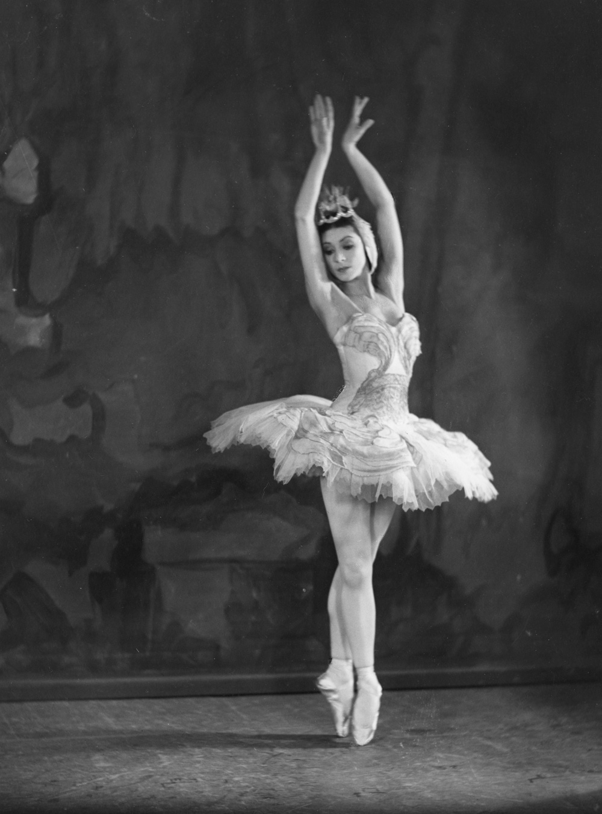

Ballet originated in the Italian Renaissance courts of the 15th century. Noblemen and women were treated to lavish events, especially wedding celebrations, where dancing and music created an elaborate spectacle. Dancing masters taught the steps to the nobility, and the court participated in the performances. In the 16th century, Catherine de Medici — an Italian noblewoman, wife of King Henry II of France and a great patron of the arts — began to fund ballet in the French court. Her elaborate festivals encouraged the growth of ballet de cour, a program that included dance, decor, costume, song, music and poetry. A century later, King Louis XIV helped to popularize and standardize the art form. A passionate dancer, he performed many roles himself, including that of the Sun King in Ballet de la nuit. His love of ballet fostered its elevation from a past time for amateurs to an endeavor requiring professional training.
By 1661, a dance academy had opened in Paris, and in 1681 ballet moved from the courts to the stage. The French opera Le Triomphe de l’Amour incorporated ballet elements, creating a long-standing opera-ballet tradition in France. By the mid-1700s French ballet master Jean Georges Noverre rebelled against the artifice of opera-ballet, believing that ballet could stand on its own as an art form. His notions — that ballet should contain expressive, dramatic movement that should reveal the relationships between characters — introduced the ballet d’action, a dramatic style of ballet that conveys a narrative. Noverre’s work is considered the precursor to the narrative ballets of the 19th century
Early classical ballets such as Giselle and La Sylphide were created during the Romantic Movement in the first half of the 19th century. This movement influenced art, music and ballet. It was concerned with the supernatural world of spirits and magic and often showed women as passive and fragile. These themes are reflected in the ballets of the time and are called romantic ballets. This is also the period of time when dancing on the tips of the toes, known as pointe work, became the norm for the ballerina. The romantic tutu, a calf-length, full skirt made of tulle, was introduced.
The popularity of ballet soared in Russia, and, during the latter half of the 19th century, Russian choreographers and composers took it to new heights. Marius Petipa’s The Nutcracker, The Sleeping Beauty and Swan Lake, by Petipa and Lev Ivanov, represent classical ballet in its grandest form. The main purpose was to display classical technique — pointe work, high extensions, precision of movement and turn-out (the outward rotation of the legs from the hip)—to the fullest. Complicated sequences that show off demanding steps, leaps and turns were choreographed into the story. The classical tutu, much shorter and stiffer than the romantic tutu, was introduced at this time to reveal a ballerina’s legs and the difficulty of her movements and footwork.Source: